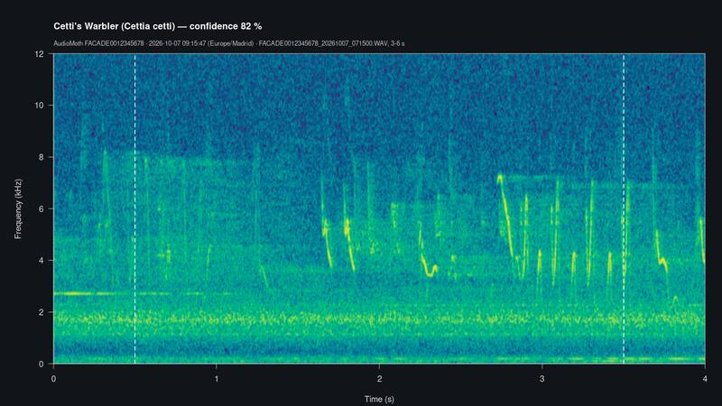
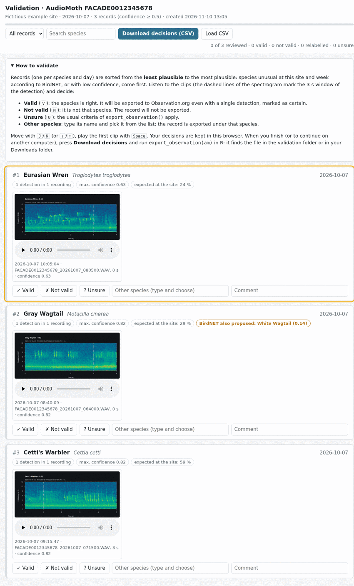
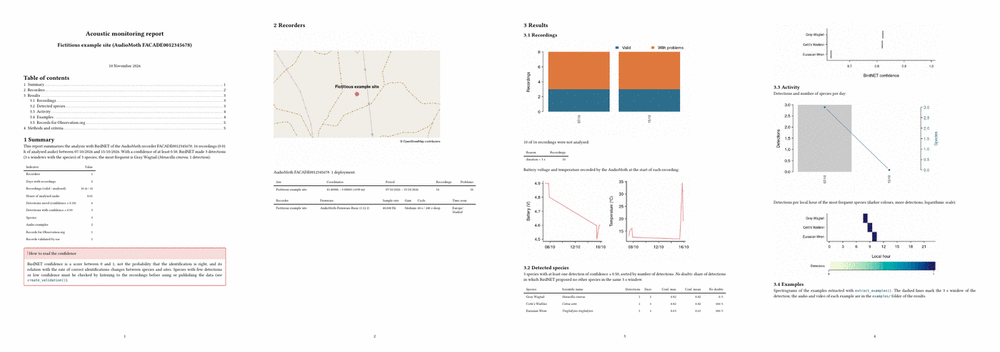

1. Getting started: the complete workflow
AudiomothR version 0.4.0
Antonio Canepa-Oneto
Patricia de la Fuente Gamero
José Antonio Barbero-Aparicio
Julia Guerra Carande
Claudia Fernández-Ruiz
Alicia Olivares
Raúl Marticorena-Sánchez
2026-11-13
Source:vignettes/audiomothr-1-workflow.Rmd
audiomothr-1-workflow.RmdAbstract
A step-by-step tutorial, for new users, of the whole workflow of AudiomothR with the example card of the package: installation and requirements, reading (and copying) an AudioMoth card, the analysis with BirdNET, the summary by species, audio, spectrogram and video examples, the validation of the records by ear, the export to Observation.org and the PDF report. Every step shows its code, what it prints and what it produces, with checks and a section of usual problems.
This is the first of three vignettes of AudiomothR:
- Getting started: the complete workflow (this one): every step, from the SD card of an AudioMoth to the records for Observation.org and the PDF report, run with the example card of the package.
-
Which species BirdNET looks for: the location
filter of BirdNET, own lists of species and lists built from GBIF
(
vignette("audiomothr-2-species")). -
Several cards, several boxes and reports: a box
that stays in the field for months, a box that is moved, coming back to
the work another day, and reports of several boxes
(
vignette("audiomothr-3-boxes")).
You do not need to know much R to follow it: copy each block of code
into the R console (or into a script in RStudio) in
order, and compare what you get with what is shown here. Lines
that start with #> are what R prints.
What AudiomothR does
An AudioMoth records thousands of WAV files on its SD card. AudiomothR takes that card and, step by step:
| Step | Function | Required? | What it produces | Time (real card of 1,700 recordings) |
|---|---|---|---|---|
| 1. Read the card (and copy it to the disk) | read_audiomoth() |
Yes | Inventory of the recordings, copy of the card | ~2 s (+ the copy) |
| 2. Prepare the audio | prepare_audio() |
No (step 3 does it) | Audio at 48 kHz mono, when needed | seconds to minutes |
| 3. Analyse with BirdNET | analyze_birdnet() |
Yes | Table of detections (species, time, confidence) | ~30 min |
| 4. Summarise by species |
species_summary(), detected_species()
|
No | Table and list of the species | seconds |
| 5. Examples of the species | extract_examples() |
No | Audio, spectrogram and video of the best detections | ~1 s each |
| 6. Validate by ear | create_validation() |
No, but recommended | Web page to listen and decide | your time |
| 7. Export to Observation.org | export_observation() |
Yes, to publish | CSV ready to import | seconds |
| 8. Report | create_report() |
No | PDF with maps, graphs and tables | ~1 min |
process_audiomoth() does all the steps with a single
call (see the end of this vignette), but going through them one by one
is the best way to learn what each one does and to check its
results.
Words used in this vignette
-
Box (recorder): one AudioMoth, identified by its
device ID (16 characters,
e.g.
FACADE0012345678). -
Card: the SD card of the box. It holds a
CONFIG.TXTfile and one folder per day (20261007/) with the WAV files. - Deployment: the period during which a card was in the box at a site. A box usually has many deployments (the card is replaced every few days or weeks), sometimes at different sites.
-
Results folder (
output): the folder where AudiomothR saves everything for one box. One folder per box, which gathers all its cards. - Detection: a 3 s window of audio where BirdNET proposes a species, with a confidence between 0 and 1. The confidence is a score, not the probability that the identification is right.
-
No doubts (
no_doubts): BirdNET proposed only one species in that window. -
Probability of occurrence
(
location_prob): how expected the species is at the site in that week of the year, according to the BirdNET metadata model (see vignette 2). - Record: one species on one day at one site, which is what Observation.org receives.
0. Before you start
Installation
install.packages("remotes")
remotes::install_github("ajcanepa/AudiomothR")Besides R, AudiomothR needs ffmpeg, a program that converts audio and makes videos:
- Windows:
winget install ffmpegin a terminal (PowerShell). - macOS:
brew install ffmpeg(with Homebrew). - Linux:
sudo apt install ffmpeg.
For the PDF report it also needs Quarto, which already comes with RStudio and Positron (otherwise, https://quarto.org). Python does not have to be installed by hand: the birdnetR package installs its own the first time.
Check what is installed
library(AudiomothR)
check_requirements()
#>
#> ── AudiomothR requirements ──
#>
#> ✔ ffmpeg: /usr/bin/ffmpeg
#> ✔ birdnetR 0.3.2 (the first time it installs Python and the BirdNET model)
#> ✔ Quarto 1.11.9 (PDF report): /usr/local/bin/quarto
#> ✔ knitr 1.52 and rmarkdown 2.32 (PDF report and vignettes)
#> ✔ maptiles, sf and terra (report map on OpenStreetMap)
#> ℹ Language of the common names (from the system locale): "en_us". Change it
#> with the `language` argument of `analyze_birdnet()`.Each line is a requirement: ✔ when it is ready and
✖ when it is missing, with the way to install it. The last
line tells the language of the common names of the species (that of the
operating system; it can be changed later with
language).
Install BirdNET (once)
The first time, this installs Python, TensorFlow and the BirdNET model (about 3 GB, a few minutes, with an Internet connection). It is done once per computer. When it finishes it prints something like:
✔ BirdNET v2.4 is ready (6522 classes; common names in "en_uk").
ℹ Model in '/home/you/.local/share/birdnet/models/v2.4/TFLite'.If it is not run, the first analyze_birdnet() does
it.
The example card
The package includes a real AudioMoth card, reduced and
anonymised: the device ID (FACADE0012345678) and
the location (41.00°N 3.00°W) are fictitious; there are two
days (7 and 15 October) with 8 recordings each; most WAV files were cut
to 0.05 s and only 6 of them keep about 7 s of real song. This is where
it is and what it contains:
example_card <- system.file("extdata", "example", "card", package = "AudiomothR")
list.files(example_card, recursive = TRUE)
#> [1] "20261007/FACADE0012345678_20261007_041500.WAV"
#> [2] "20261007/FACADE0012345678_20261007_055000.WAV"
#> [3] "20261007/FACADE0012345678_20261007_064000.WAV"
#> [4] "20261007/FACADE0012345678_20261007_071500.WAV"
#> [5] "20261007/FACADE0012345678_20261007_073000.WAV"
#> [6] "20261007/FACADE0012345678_20261007_080500.WAV"
#> [7] "20261007/FACADE0012345678_20261007_164500.WAV"
#> [8] "20261007/FACADE0012345678_20261007_194500.WAV"
#> [9] "20261015/FACADE0012345678_20261015_042500.WAV"
#> [10] "20261015/FACADE0012345678_20261015_060000.WAV"
#> [11] "20261015/FACADE0012345678_20261015_063500.WAV"
#> [12] "20261015/FACADE0012345678_20261015_065000.WAV"
#> [13] "20261015/FACADE0012345678_20261015_073000.WAV"
#> [14] "20261015/FACADE0012345678_20261015_074000.WAV"
#> [15] "20261015/FACADE0012345678_20261015_163000.WAV"
#> [16] "20261015/FACADE0012345678_20261015_193000.WAV"
#> [17] "CONFIG.TXT"With a real card, example_card would be the path of the
card, e.g. "E:/" on Windows,
"/Volumes/AUDIOMOTH" on macOS or
"/media/you/SD" on Linux. It is the folder that contains
CONFIG.TXT, not a daily folder.
What the box was told to do: CONFIG.TXT
read_config() reads the configuration file of the card.
You do not need it for the workflow (step 1 reads it), but it is useful
to check a card:
config <- read_config(file.path(example_card, "CONFIG.TXT"))
config
#>
#> ── AudioMoth FACADE0012345678 ──
#>
#> • Firmware: AudioMoth-Firmware-Basic (1.12.1)
#> • Sample rate: 48,000 Hz, gain Medium
#> • Cycle: 60 s recording / 240 s sleeping
#> • Sun recording mode: Sunrise and sunset
#> • Dates: 2026-10-06 to 2026-10-30
#> • Location: 41, -3 (±698 m)The location of CONFIG.TXT
(41, -3 (±698 m)) only has two decimals, about 700 m, and
it is only right if it was updated in the AudioMoth Configuration App
when the box was placed. That is why the coordinates of the site should
be given in step 1.
Coordinates: copy and paste them
parse_coordinates() reads coordinates in the formats of
Google Earth, Google Maps or a GPS. Step 1 uses it for its
coordinates argument, so you can paste them as they
come:
parse_coordinates("41.123456, -3.123456") # Google Maps (click on the point)
#> $lat
#> [1] 41.12346
#>
#> $lon
#> [1] -3.123456
#>
#> $precision_m
#> [1] 1
parse_coordinates("41°07'24.4\"N 3°07'24.4\"W") # Google Earth, degrees-minutes-seconds
#> $lat
#> [1] 41.12344
#>
#> $lon
#> [1] -3.123444
#>
#> $precision_m
#> [1] 2
parse_coordinates("N41 07.407 W3 07.407") # GPS, degrees and decimal minutes
#> $lat
#> [1] 41.12345
#>
#> $lon
#> [1] -3.12345
#>
#> $precision_m
#> [1] 2precision_m is the precision implied by the number of
decimals; it is the accuracy that Observation.org receives.
Without hemisphere letters the latitude goes first, and
west and south are negative.
1. Reading the card
output <- file.path(tempdir(), "AudiomothR_results", "box_01")
am <- read_audiomoth(
example_card,
coordinates = "41.00, -3.00", # where the box was (fictitious here)
site = "Fictitious example site", # optional name of the site
output = output, # results folder of this box
copy_to = TRUE # copy the card to the disk and work on the copy
)
#> ℹ /tmp/RtmpISrST2/AudiomothR_results/box_01 is in the temporary folder of R: it
#> is deleted when R closes.
#> For your own recordings give a folder of your own, e.g. `output =
#> "~/AudiomothR_results/box_01"`.
#> Copying the card to
#> /tmp/RtmpISrST2/AudiomothR_results/box_01/recordings/20261007-20261015: 17
#> files (4 MB).
#> ✔ Card copied (17 files): the analysis uses the copy, and the card can be
#> formatted once you have checked it.
#>
#>
#> ── AudioMoth FACADE0012345678 ──────────────────────────────────────────────────
#>
#> • Card: /home/runner/work/_temp/Library/AudiomothR/extdata/example/card
#> (copied)
#>
#> • Copy of the card (used from now on):
#> /tmp/RtmpISrST2/AudiomothR_results/box_01/recordings/20261007-20261015
#>
#> • Site of this card: Fictitious example site (41, -3; ±698 m; source: argument)
#>
#> • Map: <https://www.openstreetmap.org/?mlat=41&mlon=-3#map=15/41/-3>
#>
#> • Recordings: 16 in 2 days (2026-10-07 to 2026-10-15, Europe/Madrid time)
#>
#> • Audio: 48,000 Hz, gain Medium, 0.7 min in total
#>
#> • 10 with problems: duration < 3 s
#>
#> • Battery: 4.9 V → 4.5 V
#>
#> • Temperature: 11.7 to 34.4 °C
#>
#> • Results in: /tmp/RtmpISrST2/AudiomothR_results/box_01This vignette saves everything in the temporary folder of R (
tempdir()), which is deleted when R closes. With your own recordings, give a folder of your own, e.g.output = "~/AudiomothR_results/box_01". Each function says where it saved what it created;output(oram$output) is the folder to open to find everything.
What each argument means:
-
folder(the first one): the card. Without it, a window opens to choose it (choose_folder()). -
coordinates: where the box was during this deployment. -
site: a name for the site (it appears in the report). -
output: the results folder. Here it is a temporary folder that disappears when R is closed; in real use choose a folder of your own, outside the card, one per box, e.g."~/AudiomothR_results/box_01". Withoutoutput, R asks for it in the console and remembers it for the next card of the same box. -
copy_to = TRUE: before anything else, the card is copied into<output>/recordings/, and from then on everything is done with the copy. This is the recommended way: the card can be formatted and taken back to the field, and the recordings are kept.copy_tomay also be a folder of a backup disk, e.g.copy_to = "D:/AudioMoth_backup"; withoutcopy_to, the card is read where it is and it must stay connected for steps 5 and 6.
The copy keeps the folders and the dates of the files and checks the size of each one. If it is interrupted, running the same line again copies only what is missing.
Check: the summary above says Copy of the card (used from now on), Recordings: 16 in 2 days and 10 with problems: duration < 3 s. Those 10 are the files cut to 0.05 s: in a real card, problems are usually rare (empty files at the end of a full card, interrupted recordings…).
What is inside am
am is an R object (a list) that collects everything
about the box, and that every step completes:
names(am)
#> [1] "folder" "card_folder" "config" "location" "site"
#> [6] "deployment" "time_zone" "output" "recordings" "deployments"
am$folder # the copy of the card, used from now on
#> [1] "/tmp/RtmpISrST2/AudiomothR_results/box_01/recordings/20261007-20261015"
am$card_folder # the original card
#> [1] "/home/runner/work/_temp/Library/AudiomothR/extdata/example/card"The inventory has one row per WAV file:
am$recordings[, c("file", "start_local", "duration_s", "battery_v", "temperature_c", "valid", "problem")]
#> file start_local duration_s
#> 1 FACADE0012345678_20261007_041500.WAV 2026-10-07 06:15:00 0.05
#> 2 FACADE0012345678_20261007_055000.WAV 2026-10-07 07:50:00 0.05
#> 3 FACADE0012345678_20261007_064000.WAV 2026-10-07 08:40:09 7.00
#> 4 FACADE0012345678_20261007_071500.WAV 2026-10-07 09:15:44 7.00
#> 5 FACADE0012345678_20261007_073000.WAV 2026-10-07 09:30:00 0.05
#> 6 FACADE0012345678_20261007_080500.WAV 2026-10-07 10:05:04 7.00
#> 7 FACADE0012345678_20261007_164500.WAV 2026-10-07 18:45:00 0.05
#> 8 FACADE0012345678_20261007_194500.WAV 2026-10-07 21:45:00 0.05
#> 9 FACADE0012345678_20261015_042500.WAV 2026-10-15 06:25:00 0.05
#> 10 FACADE0012345678_20261015_060000.WAV 2026-10-15 08:00:00 0.05
#> 11 FACADE0012345678_20261015_063500.WAV 2026-10-15 08:35:00 7.00
#> 12 FACADE0012345678_20261015_065000.WAV 2026-10-15 08:50:00 7.00
#> 13 FACADE0012345678_20261015_073000.WAV 2026-10-15 09:30:09 7.00
#> 14 FACADE0012345678_20261015_074000.WAV 2026-10-15 09:40:00 0.05
#> 15 FACADE0012345678_20261015_163000.WAV 2026-10-15 18:30:00 0.05
#> 16 FACADE0012345678_20261015_193000.WAV 2026-10-15 21:30:00 0.05
#> battery_v temperature_c valid problem
#> 1 4.9 13.1 FALSE duration < 3 s
#> 2 4.9 13.1 FALSE duration < 3 s
#> 3 4.9 13.6 TRUE <NA>
#> 4 4.9 14.2 TRUE <NA>
#> 5 4.9 14.2 FALSE duration < 3 s
#> 6 4.9 15.0 TRUE <NA>
#> 7 4.9 16.3 FALSE duration < 3 s
#> 8 4.8 12.5 FALSE duration < 3 s
#> 9 4.6 11.8 FALSE duration < 3 s
#> 10 4.6 11.7 FALSE duration < 3 s
#> 11 4.6 11.7 TRUE <NA>
#> 12 4.6 11.7 TRUE <NA>
#> 13 4.5 13.4 TRUE <NA>
#> 14 4.5 13.7 FALSE duration < 3 s
#> 15 4.6 34.4 FALSE duration < 3 s
#> 16 4.6 19.1 FALSE duration < 3 s-
start_local: start of the recording in local time (by defaultEurope/Madrid, with daylight saving time; AudioMoth records in UTC, and the UTC time is instart_utc). Usetime_zone = "Atlantic/Canary"in the Canary Islands. -
valid/problem: recordings with problems (unreadable, interrupted, shorter than 3 s, without date, duplicated) are not analysed. - Recordings triggered by a threshold (
*T.WAV) are recognised and their silences are restored before the analysis.
The deployments of the box (one per card read into this folder):
am$deployments[, c("deployment", "site", "lat", "lon", "first_date", "last_date", "recordings")]
#> deployment site lat lon first_date last_date recordings
#> 1 D20261007 Fictitious example site 41 -3 2026-10-07 2026-10-15 16And this is the results folder so far:
list.files(output)
#> [1] "AudioMoth_FACADE0012345678_deployments.csv"
#> [2] "AudioMoth_FACADE0012345678_recordings.csv"
#> [3] "recordings"AudioMoth_<ID>_recordings.csv and
AudioMoth_<ID>_deployments.csv can be opened with a
spreadsheet. Reading the same card again is fast: the metadata of the
WAV files are kept in a cache.
Without arguments: the interactive way
In RStudio, the simplest is to run it without arguments and answer:
am <- read_audiomoth(copy_to = TRUE)
#> (a window opens to choose the card)
#> ℹ Results folder of this box (outside the card; it gathers all the cards of the box).
#> Press Enter to use '~/AudiomothR_results/AudioMoth_FACADE0012345678', or type another path.
#> Results folder:
#> ! Where was the box during this deployment?
#> ℹ Copy the position of the site in Google Earth (or Google Maps) and paste it here.
#> Coordinates:The folder is suggested with choose_output(); the
coordinates are asked for only when they are not in
CONFIG.TXT (otherwise they are taken from there, with a
warning to check them).
2. Preparing the audio for BirdNET
BirdNET listens to audio at 48 kHz in mono.
prepare_audio() converts what needs it (e.g. recordings at
250 kHz for bats, or triggered recordings) into
<output>/audio_48k/, and leaves out the recordings
with problems:
am <- prepare_audio(am)
#> ✔ All valid recordings are already 48 kHz mono: nothing to convert.
#> ! 10 recordings with problems are left out (see column problem).Here nothing needs converting: the box recorded at 48 kHz. This step
is optional: analyze_birdnet() converts by itself what it
needs.
3. Analysing with BirdNET
Path A: with BirdNET installed
am <- analyze_birdnet(am)This is what it prints with the example card (BirdNET v2.4):
BirdNET: 6 recordings; 6 pending.
Loading the BirdNET model...
Location filter: 156 expected species per site and week on average.
✔ 6 detections of 4 species saved in '<output>/AudioMoth_FACADE0012345678_detections.csv'.- Only the 6 valid recordings are analysed.
- Location filter: by default BirdNET only looks for the species expected at the site and week of each recording (here, about 156). This avoids species of other continents, but it may leave out rare species: vignette 2 explains how it works and how to use your own list of species instead.
- Each recording is analysed once: if the analysis is interrupted (or a new card is added), running it again only analyses what is missing.
- The common names are in the language of the system; to change them,
analyze_birdnet(am, language = "es"). Changing the language does not analyse the recordings again.
Path B: without BirdNET (this vignette)
Building this vignette cannot install Python, so here we load the detections that Path A gave for this card, which are included in the package. If you ran Path A, skip this block.
saved <- system.file("extdata", "example", "birdnet_detections.csv", package = "AudiomothR")
am$detections <- read_detections(saved)
# analyze_birdnet() also saves them in the results folder; here we copy the file
file.copy(saved, file.path(output, "AudioMoth_FACADE0012345678_detections.csv"))
#> [1] TRUEread_detections() also reads the detections saved in a
results folder,
e.g. read_detections("~/AudiomothR_results/box_01/AudioMoth_FACADE0012345678_detections.csv").
The detections
am$detections[, c("local_date", "local_time", "start_s", "end_s", "scientific_name",
"common_name", "confidence", "no_doubts", "location_prob")]
#> local_date local_time start_s end_s scientific_name common_name
#> 1 2026-10-07 08:40:09 0 3 Motacilla cinerea Gray Wagtail
#> 2 2026-10-07 08:40:09 0 3 Motacilla alba White Wagtail
#> 3 2026-10-07 08:40:12 3 6 Motacilla cinerea Gray Wagtail
#> 4 2026-10-07 08:40:12 3 6 Motacilla alba White Wagtail
#> 5 2026-10-07 09:15:47 3 6 Cettia cetti Cetti's Warbler
#> 6 2026-10-07 10:05:04 0 3 Troglodytes troglodytes Eurasian Wren
#> confidence no_doubts location_prob
#> 1 0.8222 FALSE 0.2949
#> 2 0.1448 FALSE 0.8740
#> 3 0.4824 FALSE 0.2949
#> 4 0.1194 FALSE 0.8740
#> 5 0.8196 TRUE 0.5931
#> 6 0.6319 TRUE 0.2354One row per 3 s window and species:
| Column | Meaning |
|---|---|
local_date, local_time
|
When the detection starts (local time) |
file, start_s, end_s
|
Recording and seconds of the window (to listen to it) |
scientific_name, common_name
|
Species proposed by BirdNET |
confidence |
Score of BirdNET (0-1); detections ≥ 0.10 are kept |
no_doubts |
TRUE when BirdNET proposed only this species in the
window |
n_labels_window, other_confidence_max
|
How many species BirdNET proposed in the window, and the highest confidence of the others |
location_prob |
Probability of occurrence at the site and week (0-1) |
deployment, site, lat,
lon
|
Deployment and site of the recording |
Check: 6 detections of 4 species, all on 7 October. In the recording of 08:40, BirdNET hesitates in both windows between the grey wagtail (Motacilla cinerea) and the white wagtail (Motacilla alba): their
no_doubtsisFALSE.
4. Summary by species
species_summary(am, min_confidence = 0.5)
#> scientific_name common_name detections days recordings
#> 1 Motacilla cinerea Gray Wagtail 1 1 1
#> 2 Cettia cetti Cetti's Warbler 1 1 1
#> 3 Troglodytes troglodytes Eurasian Wren 1 1 1
#> confidence_max confidence_mean location_prob example_candidates
#> 1 0.8222 0.822 0.2949 0
#> 2 0.8196 0.820 0.5931 0
#> 3 0.6319 0.632 0.2354 0Only detections with a confidence of at least
min_confidence count (0.5 by default): the white wagtail,
with 0.14 and 0.12, does not appear. For each species: number of
detections, days and recordings, highest and mean confidence,
probability of occurrence, and example_candidates, the
detections good enough for an example (confidence ≥
example_confidence, 0.85 by default, and no doubts). Here
no detection reaches 0.85, so there are no candidates.
Thresholds: which one does what
A detection meets several thresholds along the workflow. None of them makes a record true: the confidence of BirdNET is a score, not a probability, and only listening (step 6) confirms a species.
| Step | Argument (default) | What it decides |
|---|---|---|
3. analyze_birdnet()
|
min_confidence (0.10) |
What BirdNET keeps as a detection: candidates, many of them wrong. It is low on purpose, so that the other thresholds can be changed without analysing again |
3. analyze_birdnet()
|
location_threshold (0.03) |
Which species BirdNET looks for at the site and week (vignette 2) |
4. species_summary(), detected_species();
8. create_report()
|
min_confidence (0.5) |
Which detections are counted as a possible presence in the summary and the report |
4. detected_species(); 5.
select_examples(), extract_examples();
process_audiomoth()
|
example_confidence or min_confidence of
the examples (0.85), no_doubts (TRUE) |
Which detections are clear enough to show the species: a high bar, only to choose good examples |
6. create_validation()
|
min_confidence (0.5), min_detections
(1) |
Which records are put on the validation page |
7. export_observation()
|
min_confidence (0.8), min_detections (2),
no_doubts_only (FALSE) |
Which records go to Observation.org without validation. Records validated by ear do not follow them: the valid ones are exported, the not valid ones are left out |
Two things to keep in mind:
-
One threshold does not suit every species. A
species that is well identified may still get low scores when it sings
far from the recorder, softly or with noise. For the species that matter
to you, lower
min_confidenceincreate_validation()and decide by ear. -
A window with two species is not necessarily wrong.
BirdNET scores each species separately, so two birds singing at the same
time can both be right. That is why
no_doubtsis only used to choose examples and never removes detections;other_confidence_maxshows how close the other species was (here, the white wagtail had 0.14 against 0.82 of the grey wagtail).
detected_species() prints the species as R
code, ready to choose the examples of step 5. Here the
threshold of the examples is lowered to 0.5, because the example card
has few detections:
species <- detected_species(am, example_confidence = 0.5)
#> # Species with confidence >= 0.5. n = examples that meet the criteria
#> # (confidence >= 0.5, no doubts, one per recording), up to 3. Change the n and paste it
#> # into extract_examples(am, species).
#> species <- c(
#> "Motacilla cinerea" = 0, # Gray Wagtail | 1 detection | confidence max. 0.82, mean 0.82
#> "Cettia cetti" = 1, # Cetti's Warbler | 1 detection | confidence max. 0.82, mean 0.82
#> "Troglodytes troglodytes" = 1 # Eurasian Wren | 1 detection | confidence max. 0.63, mean 0.63
#> )Each number is how many examples of that species can be extracted. There are two ways of using it:
-
As it is:
speciesalready holds the vector, so it can go directly to step 5. - Edited: copy the printed lines into your script, change the numbers (0 = no examples) or delete species, and run them:
species <- c(
"Cettia cetti" = 1, # Cetti's warbler
"Troglodytes troglodytes" = 1 # Eurasian wren
)5. Examples: audio, spectrogram and video
First, without creating any file, see which detections would be used:
select_examples(am, species, min_confidence = 0.5)[, c("scientific_name", "local_time", "file", "start_s", "confidence")]
#> scientific_name local_time file
#> 1 Cettia cetti 09:15:47 FACADE0012345678_20261007_071500.WAV
#> 2 Troglodytes troglodytes 10:05:04 FACADE0012345678_20261007_080500.WAV
#> start_s confidence
#> 1 3 0.8196
#> 2 0 0.6319select_examples() takes the detections with the highest
confidence, with no doubts and at most one per recording
(min_confidence, no_doubts and
one_per_recording change that).
extract_examples() uses the same choice and creates the
files:
examples <- extract_examples(am, species, min_confidence = 0.5, margin_s = 0.5)
#> Creating examples ■■■■■■■■■■■■■■■■ 50% | ETA: 3s
#> Creating examples ■■■■■■■■■■■■■■■■■■■■■■■■■■■■■■■ 100% | ETA: 0s
#> ✔ 2 examples of 2 species in
#> /tmp/RtmpISrST2/AudiomothR_results/box_01/examples.
basename(c(examples$wav, examples$png, examples$mp4))
#> [1] "Cettia_cetti_01_conf82_20261007_091547.wav"
#> [2] "Troglodytes_troglodytes_01_conf63_20261007_100504.wav"
#> [3] "Cettia_cetti_01_conf82_20261007_091547.png"
#> [4] "Troglodytes_troglodytes_01_conf63_20261007_100504.png"
#> [5] "Cettia_cetti_01_conf82_20261007_091547.mp4"
#> [6] "Troglodytes_troglodytes_01_conf63_20261007_100504.mp4"For each example, in
<output>/examples/<species>/:
- a WAV clip with the detection and
margin_sseconds before and after (1 s by default); - its spectrogram (PNG), with the 3 s window of BirdNET between dashed lines;
- a video (MP4) of the spectrogram with the sound,
valid for any player or social network.
style = "scroll"makes the spectrogram scroll under a fixed line instead of a moving cursor;video = FALSEskips the videos.
This is the spectrogram of the Cetti’s warbler:

The same drawings can be made of any WAV file,
e.g. one of the copy of the card, with spectrogram_image()
(it only needs R) and spectrogram_video() (it needs
ffmpeg):
wav <- am$recordings$path[am$recordings$valid][1]
png <- spectrogram_image(wav, file.path(tempdir(), "my_spectrogram.png"),
title = "My first spectrogram", max_freq = 10000)
#> ✔ Spectrogram in /tmp/RtmpISrST2/my_spectrogram.png.
file.exists(png)
#> [1] TRUE
spectrogram_video(wav, file.path(tempdir(), "my_video.mp4"), style = "scroll")6. Validating the records by ear (optional, recommended)
BirdNET makes mistakes, above all with species that are rare at the site or detected with low confidence. Before publishing, the records can be checked by ear on a web page:
page <- create_validation(am, min_confidence = 0.5, open = FALSE)
#> ✔ Validation page with 3 records in
#> /tmp/RtmpISrST2/AudiomothR_results/box_01/validation/AudioMoth_FACADE0012345678_validation.html.
#> ℹ Listen and decide, press Download decisions (CSV) and run
#> `export_observation(am)`: the decisions are applied automatically.With open = TRUE (the default in RStudio) the page opens
in the browser. It is in
<output>/validation/AudioMoth_<ID>_validation.html,
works offline and without R (the whole
validation/ folder can be sent to an expert) and looks like
this:

- There is one card per record (species and day), sorted from the least plausible (low confidence and low probability of occurrence) to the most plausible, so the doubtful ones come first.
- Each card shows the number of detections, the highest confidence,
how expected the species is at the site, the other species that BirdNET
proposed in the same windows (in orange), and the clips
(
n_clips, 2 by default) of the best detections with their spectrograms. - For each record, decide:
| Button | Key | Meaning | Effect on the export (step 7) |
|---|---|---|---|
| Valid | V |
The species is right | Exported, marked as certain, even with one detection |
| Not valid | N |
It is not that species | Not exported |
| Unsure | U |
Cannot tell | The usual criteria apply |
| Other species | (type) | It is another species | Exported under the new species, as certain |
J and K move between cards and
Space plays the first clip. The decisions are kept in the
browser while you work. When you finish, press Download
decisions (CSV): the browser saves
AudioMoth_<ID>_validation.csv in your
Downloads folder, where step 7 finds it (another folder can be
set with options(AudiomothR.downloads = "path")). Load
CSV reloads decisions saved before, e.g. to go on another day or on
another computer.
The same CSV is also in the validation/ folder and can
be filled in with a spreadsheet instead of the page (columns
decision: valid, invalid or
unsure; new_name: scientific name of the right
species). Here we do that, with three decisions:
file <- file.path(output, "validation", "AudioMoth_FACADE0012345678_validation.csv")
decisions <- read.csv(file)
decisions[, c("record_id", "scientific_name", "common_name", "detections", "confidence_max")]
#> record_id scientific_name common_name
#> 1 20261007_Troglodytes_troglodytes Troglodytes troglodytes Eurasian Wren
#> 2 20261007_Motacilla_cinerea Motacilla cinerea Gray Wagtail
#> 3 20261007_Cettia_cetti Cettia cetti Cetti's Warbler
#> detections confidence_max
#> 1 1 0.6319
#> 2 1 0.8222
#> 3 1 0.8196
decisions$decision[decisions$scientific_name == "Troglodytes troglodytes"] <- "valid"
decisions$decision[decisions$scientific_name == "Cettia cetti"] <- "unsure"
decisions$new_name[decisions$scientific_name == "Motacilla cinerea"] <- "Motacilla alba"
write.csv(decisions, file, row.names = FALSE, na = "")read_validation() shows the decisions that will be
applied (and tells you which file it found):
read_validation(am)[, c("date", "scientific_name", "decision", "new_name")]
#> ℹ Decisions read from
#> /tmp/RtmpISrST2/AudiomothR_results/box_01/validation/AudioMoth_FACADE0012345678_validation.csv.
#> date scientific_name decision new_name
#> 1 2026-10-07 Troglodytes troglodytes valid <NA>
#> 2 2026-10-07 Motacilla cinerea <NA> Motacilla alba
#> 3 2026-10-07 Cettia cetti unsure <NA>Running create_validation() again later (e.g. after
adding a card) keeps the decisions already taken.
7. Exporting to Observation.org
obs <- export_observation(am)
#> ℹ Validation applied
#> (/tmp/RtmpISrST2/AudiomothR_results/box_01/validation/AudioMoth_FACADE0012345678_validation.csv):
#> 1 valid, 0 not valid, 1 relabelled.
#> ✔ 2 records (2 species) for Observation.org in
#> /tmp/RtmpISrST2/AudiomothR_results/box_01/AudioMoth_FACADE0012345678_observation.csv.
#> ℹ Criteria: confidence ≥ 0.8, ≥ 2 detections per species and day; records
#> validated by ear always included.
obs[, c("date", "time", "scientific name", "is certain", "notes")]
#> date time scientific name is certain
#> 1 2026-10-07 08:40 Motacilla alba True
#> 2 2026-10-07 10:05 Troglodytes troglodytes True
#> notes
#> 1 Identified with BirdNET v2.4, checked by listening to the recording (best detection: FACADE0012345678_20261007_064000.WAV, 0 s, confidence 0.82)
#> 2 Identified with BirdNET v2.4, checked by listening to the recording (best detection: FACADE0012345678_20261007_080500.WAV, 0 s, confidence 0.63)By default a record (species and day) is exported when it has at least 2 detections with a confidence ≥ 0.80 that day, plus the records validated by ear. No species of this small card meets the criteria, so only the validated ones are exported: the wren (valid) and the wagtail under its new name, the white wagtail; the Cetti’s warbler (unsure) follows the criteria and is left out.
The criteria can be changed, e.g. for this card:
obs <- export_observation(am, min_confidence = 0.5, min_detections = 1, validation = FALSE,
overwrite = TRUE)
#> ✔ 3 records (3 species) for Observation.org in
#> /tmp/RtmpISrST2/AudiomothR_results/box_01/AudioMoth_FACADE0012345678_observation.csv.
#> ℹ Criteria: confidence ≥ 0.5, ≥ 1 detection per species and day.
obs[, c("date", "time", "scientific name", "is certain")]
#> date time scientific name is certain
#> 1 2026-10-07 08:40 Motacilla cinerea False
#> 2 2026-10-07 09:15 Cettia cetti False
#> 3 2026-10-07 10:05 Troglodytes troglodytes False| Argument | Meaning |
|---|---|
min_confidence, min_detections
|
Criteria of a record (0.80 and 2) |
no_doubts_only = TRUE |
Count only the detections without doubts |
species, from, to
|
Only some species or dates
(e.g. species = "Cettia cetti",
from = "2026-10-01") |
validation = FALSE |
Ignore the validation |
validated_only = TRUE |
Export only the records validated as correct |
is_certain |
"auto" (validated = True, the rest
False), "True" or "False"
|
equivalences |
Own translations of names,
c("BirdNET name" = "Observation.org name")
|
overwrite = TRUE |
Replace an export that was edited by hand |
The CSV
(<output>/AudioMoth_<ID>_observation.csv) has
the 19 columns of the import format of Observation.org:
-
date,time: local date and time of the first detection of the day. -
scientific name: the name of the species in Observation.org. BirdNET uses the eBird/Clements taxonomy, so its names are translated through the IOC World Bird List into the species list of Observation.org (e.g. Corvus cornix → Corvus corone). Classes that are not birds (human voice, noise, frogs, insects) are left out. -
lat,lng,accuracy: the location of the deployment and its precision. -
notes: “Identified with BirdNET v2.4”, whether it was validated by ear, and the best detection (file, second and confidence), so the audio can be found again. -
is certain:Trueonly for the records validated by ear. -
method/counting method:Oído/Sin especificar. -
external reference: a unique code of the record, so the same record is not imported twice.
Uploading it: in Observation.org, use the import of
observations from a file (the one that offers the example file
observations-import-example.xlsx), choose the CSV and
check the preview before confirming. If you edit the
CSV by hand (e.g. with a spreadsheet, keeping it comma separated), a new
export does not overwrite it: it is saved with the date in its name,
unless overwrite = TRUE.
8. PDF report (optional)
pdf <- create_report(am, open = FALSE)
basename(pdf)(This block was not run when building the vignette: Quarto was not found on this computer.)
create_report() writes the report in
<output>/report/ (with open = TRUE, the
default in RStudio, it opens the PDF). It has a summary, a map of the
sites (on OpenStreetMap when the packages maptiles,
sf and terra are installed and there is
Internet; otherwise only the points), the state of the recordings (by
day, problems, battery and temperature), the detected species with their
confidence, the activity by day and by hour, the spectrograms of the
examples, the records for Observation.org, the result of the validation
and the methods. These are its first pages for the example card:

The folder report/ can be edited
(report.qmd) and rendered again; the report of several
boxes is in vignette 3.
Everything in one call: process_audiomoth()
Once you know the steps, a card can be processed with a single call (it needs BirdNET, so it is not run here):
am <- process_audiomoth(
folder = "E:/", # the card (without it, a window opens)
coordinates = "41.123456, -3.123456", # where the box was
site = "River - bridge",
output = "~/AudiomothR_results/box_01", # results folder of the box
copy_to = TRUE, # copy the card and work on the copy
example_species = "auto", # examples of the species of detected_species()
example_confidence = 0.85,
validation = TRUE, # validation page
report = TRUE, # PDF report
language = "en_uk" # arguments of analyze_birdnet() can be added
)It runs steps 1, 2, 3, 7, 5, 6 and 8 in that order. Observation.org
is exported with the default criteria only the first time; after
validating the records by ear, run export_observation(am)
again so that the decisions are applied. If it is interrupted,
running it again goes on where it stopped.
Where everything is
files <- list.files(output, recursive = TRUE)
files[!grepl("^(birdnet|recordings|validation/clips|report/)", files)]
#> [1] "AudioMoth_FACADE0012345678_deployments.csv"
#> [2] "AudioMoth_FACADE0012345678_detections.csv"
#> [3] "AudioMoth_FACADE0012345678_observation.csv"
#> [4] "AudioMoth_FACADE0012345678_observation.json"
#> [5] "AudioMoth_FACADE0012345678_recordings.csv"
#> [6] "examples/AudioMoth_FACADE0012345678_examples.csv"
#> [7] "examples/Cettia_cetti/Cettia_cetti_01_conf82_20261007_091547.mp4"
#> [8] "examples/Cettia_cetti/Cettia_cetti_01_conf82_20261007_091547.png"
#> [9] "examples/Cettia_cetti/Cettia_cetti_01_conf82_20261007_091547.wav"
#> [10] "examples/Troglodytes_troglodytes/Troglodytes_troglodytes_01_conf63_20261007_100504.mp4"
#> [11] "examples/Troglodytes_troglodytes/Troglodytes_troglodytes_01_conf63_20261007_100504.png"
#> [12] "examples/Troglodytes_troglodytes/Troglodytes_troglodytes_01_conf63_20261007_100504.wav"
#> [13] "validation/AudioMoth_FACADE0012345678_validation.csv"
#> [14] "validation/AudioMoth_FACADE0012345678_validation.html"| File or folder | Contents |
|---|---|
AudioMoth_<ID>_deployments.csv |
The cards (deployments) of the box: dates, site, location |
AudioMoth_<ID>_recordings.csv |
Inventory of all the recordings |
AudioMoth_<ID>_detections.csv |
All the detections of BirdNET |
AudioMoth_<ID>_observation.csv /
.json
|
The import file for Observation.org and its criteria |
recordings/ |
The copies of the cards (with copy_to = TRUE) |
examples/ |
Clips, spectrograms and videos of the examples |
validation/ |
Validation page, clips and decisions |
report/ |
The PDF report and its Quarto folder |
birdnet/ |
Results of BirdNET per recording (do not delete it: it avoids analysing again) |
audio_48k/ |
Converted audio, when needed (can be deleted after the analysis) |
If something goes wrong
| Message or problem | What to do |
|---|---|
Cannot find ffmpeg |
Install ffmpeg (see Before you start) or tell R where it
is:
options(AudiomothR.ffmpeg = "C:/ffmpeg/bin/ffmpeg.exe")
|
There is no CONFIG.TXT |
You chose a daily folder: choose the folder of the card that
contains CONFIG.TXT
|
Cannot write in ... |
The card is write-protected or the folder is read-only: give another
output
|
Give the results folder with output |
In scripts run with Rscript, output must
be given |
The coordinates are ... km away from the location of the CONFIG.TXT |
Check the coordinates (latitude first; west negative), or ignore it
if the box was moved without updating CONFIG.TXT
|
The first analyze_birdnet() takes long |
Normal: it installs Python and BirdNET once (run
setup_birdnet() beforehand) |
| Species of other continents | Check the coordinates; do not use
location_filter = FALSE without validating by ear |
| A species you know is there never appears | The location filter may leave it out: see vignette 2 |
0 of the 3 requested examples meet the criteria |
Lower min_confidence of
extract_examples(), or use
no_doubts = FALSE
|
| Examples or validation without audio | Without copy_to, the card must be connected at the same
path |
| I cannot find the files (examples, spectrograms, videos, pages) | They are in the results folder (am$output); the message
of each function gives the full path. With output in
tempdir(), as in this vignette, they are deleted when R
closes |
| The validation page does not open in Firefox (“File not found”) on Ubuntu | Firefox (and Chromium) installed as a snap cannot open
files in /tmp, where tempdir() is: open the
page in the Viewer of RStudio or in another browser, or use a results
folder outside /tmp
|
The report fails with
namespace 'htmltools' ... is being loaded, but >= ... is required
(or another package) |
An old package used by rmarkdown:
install.packages(c("knitr", "rmarkdown", "htmltools", "xfun"))
and restart R. check_requirements() shows the problem |
The report needs Quarto 1.4 or later |
Update RStudio or Positron (they include Quarto), or install it from https://quarto.org |
| Too many messages |
options(AudiomothR.quiet = TRUE) hides the informative
ones |
Next steps
-
Vignette 2,
vignette("audiomothr-2-species"): why a species may be missing, own lists of species (also those of BirdNET-Analyzer) and lists from GBIF. -
Vignette 3,
vignette("audiomothr-3-boxes"): the next cards of the same box, a box that is moved, coming back another day and reports of several boxes. - The help of each function:
?read_audiomoth,?analyze_birdnet,?export_observation…
How to cite
If you use AudiomothR, cite the version you used, and also BirdNET and, when you use them, the IOC World Bird List and GBIF:
citation("AudiomothR")
#> To cite package 'AudiomothR' in publications use:
#>
#> Canepa-Oneto A, de la Fuente Gamero P, Barbero-Aparicio J, Guerra
#> Carande J, Fernández-Ruiz C, Olivares A, Marticorena-Sánchez R
#> (2026). _AudiomothR: Acoustic Processing of AudioMoth Recordings with
#> BirdNET_. doi:10.5281/zenodo.23646408
#> <https://doi.org/10.5281/zenodo.23646408>. R package version 0.4.0,
#> <https://github.com/ajcanepa/AudiomothR>.
#>
#> A BibTeX entry for LaTeX users is
#>
#> @Manual{,
#> title = {{AudiomothR}: Acoustic Processing of {AudioMoth} Recordings with {BirdNET}},
#> author = {Antonio Canepa-Oneto and Patricia {de la Fuente Gamero} and José Antonio Barbero-Aparicio and Julia {Guerra Carande} and Claudia Fernández-Ruiz and Alicia Olivares and Raúl Marticorena-Sánchez},
#> year = {2026},
#> note = {R package version 0.4.0},
#> doi = {10.5281/zenodo.23646408},
#> url = {https://github.com/ajcanepa/AudiomothR},
#> }References
- Gill F, Donsker D, Rasmussen P (Eds) (2026). IOC World Bird List (v15.2). https://www.worldbirdnames.org
- Hill AP, Prince P, Piña Covarrubias E, Doncaster CP, Snaddon JL, Rogers A (2018). AudioMoth: Evaluation of a smart open acoustic device for monitoring biodiversity and the environment. Methods in Ecology and Evolution 9(5): 1199-1211. https://doi.org/10.1111/2041-210X.12955
- Kahl S, BirdNET Team (2025). birdnetR: Deep Learning for Automated (Bird) Sound Identification. R package version 0.3.2. https://doi.org/10.32614/CRAN.package.birdnetR
- Kahl S, Wood CM, Eibl M, Klinck H (2021). BirdNET: A deep learning solution for avian diversity monitoring. Ecological Informatics 61:
Session information
The versions of R and of the packages with which this vignette was built:
sessionInfo()
#> R version 4.6.2 (2026-10-29)
#> Platform: x86_64-pc-linux-gnu
#> Running under: Ubuntu 24.04.5 LTS
#>
#> Matrix products: default
#> BLAS: /usr/lib/x86_64-linux-gnu/openblas-pthread/libblas.so.3
#> LAPACK: /usr/lib/x86_64-linux-gnu/openblas-pthread/libopenblasp-r0.3.26.so; LAPACK version 3.12.0
#>
#> locale:
#> [1] LC_CTYPE=C.UTF-8 LC_NUMERIC=C LC_TIME=C.UTF-8
#> [4] LC_COLLATE=C.UTF-8 LC_MONETARY=C.UTF-8 LC_MESSAGES=C.UTF-8
#> [7] LC_PAPER=C.UTF-8 LC_NAME=C LC_ADDRESS=C
#> [10] LC_TELEPHONE=C LC_MEASUREMENT=C.UTF-8 LC_IDENTIFICATION=C
#>
#> time zone: UTC
#> tzcode source: system (glibc)
#>
#> attached base packages:
#> [1] stats graphics grDevices utils datasets methods base
#>
#> other attached packages:
#> [1] AudiomothR_0.4.0
#>
#> loaded via a namespace (and not attached):
#> [1] Matrix_1.7-6 jsonlite_2.0.0 compiler_4.6.2 Rcpp_1.1.2
#> [5] birdnetR_0.3.2 signal_1.8-1 jquerylib_0.1.4 systemfonts_1.3.2
#> [9] textshaping_1.0.5 png_0.1-9 yaml_2.3.12 fastmap_1.2.0
#> [13] reticulate_1.47.0 lattice_0.23-1 R6_2.6.1 maptiles_0.13.0
#> [17] classInt_0.4-11 sf_1.1-3 knitr_1.52 MASS_7.3-66
#> [21] desc_1.4.3 units_1.0-1 DBI_1.3.0 bslib_0.12.0
#> [25] rlang_1.3.0 cachem_1.1.0 terra_1.9-50 xfun_0.62
#> [29] fs_2.1.0 sass_0.4.10 otel_0.3.0 seewave_2.2.4
#> [33] cli_3.6.6 pkgdown_2.2.1 class_7.3-24 ps_1.9.3
#> [37] digest_0.6.39 grid_4.6.2 processx_3.9.0 lifecycle_1.0.5
#> [41] KernSmooth_2.23-27 proxy_0.4-29 evaluate_1.0.5 tuneR_1.4.7
#> [45] codetools_0.2-20 ragg_1.5.2 e1071_1.7-17 rmarkdown_2.32
#> [49] tools_4.6.2 htmltools_0.5.9